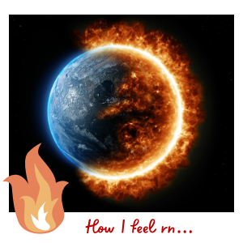

Heyyy. This is my first entry! Yay! So excited to already start writing! I think I’m just going to talk about my current status. So though the last couple of years I have been feeling really strong heat waves. At first I didn’t know why, but then I realized that the more inventions humans created, the hotter I got. As time passed I believe humans noticed the hotness of the climate that I was generating and the scientist started studying me. It turned out that I was suffering from something they called “global warming”. According to them, it is like a fever I’m having, but there’s no immediate medicine to cure it! I’m actually really scared, the more time passes the worse I am feeling. I heard rumors that a group of humans were trying to save me. I’ll keep you updated soon to see what happens.
